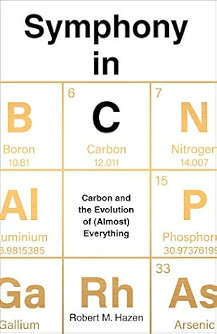

Symphony in C: Carbon and the Evolution of (Almost) Everything
Reseña por Jorge I. Zuluaga

Ver detalles · Ver reseña en GoodReads (necesita cuenta)
Si les gustan las ciencias naturales y la buena divulgación científica, tienen que escuchar esta sinfonía en carbono, el más increíble elemento químico del Universo.
El libro está increíblemente bien escrito, el lenguaje es accesible y los temas y datos que divulga el autor están muy bien documentados. Y no es para menos: Robert Hazen no solo es un avezado divulgador —a posteriori descubrí que ha escrito una decena de libros que ahora buscaré—, sino que Hazen, además, es una de las autoridades mundiales en el ciclo profundo del carbono y uno de los líderes del Deep Carbon Observatory (DCO), un proyecto cuyos resultados se divulgan ampliamente aquí.
Me encantó el capítulo dedicado al origen y evolución de la vida. Por mi trabajo de investigación en ciencias planetarias y astrobiología, me preciaba de estar bien informado en el tema. Sin embargo, al leer la síntesis de Hazen sobre el asunto, comprendí aspectos del problema que se me habían escapado hasta ahora. Solo por ese capítulo, este libro vale la pena ser leído por colegas en el área y, naturalmente, por estudiantes de ciencias. Por lo menos yo lo recomendaré en mis cursos.
Lamentablemente, no pude encontrar la versión de este libro en castellano. Si bien se podría pensar que un libro de divulgación en inglés se deja leer fácilmente, el estilo del autor y la inclusión de anécdotas sobre las personas que rodean las investigaciones que divulga hace que algunos apartes no se entiendan fácilmente si no eres bilingüe. Yo no soporto no entender el 100% de lo que leo. A pesar de esto, la mayor parte del libro, que abunda en datos y explicaciones científicas asombrosas, es fácil de seguir aun si no eres bilingüe.
La organización del libro es asombrosa. Robert Hazen es músico y ha decidido presentar los temas como si se tratara de una sinfonía, es decir, con la clásica estructura de movimientos, que a su vez se componen de temas, su desarrollo, variaciones sobre esos mismos temas, etc.
Me sorprendió todo lo que leí aquí de mineralogía. Otra vez, por mi trabajo de investigación se suponía que estaba familiarizado con algunas ideas básicas del tema. Sin embargo, descubrí que la riqueza y complejidad de los minerales en nuestro planeta es mucho más vasta de lo que pensaba; ¡increíble!
El texto confirmó una intuición que repetía, no sin algunas dudas, en mis clases y conferencias: la idea de que cada planeta en el Universo es completamente único. Robert Hazen lo confirma aquí al explicar que, por el número y diversidad de los minerales y por sus condiciones increíblemente específicas de cristalización, es posible que no haya dos Tierras en el Universo observable que sean completamente idénticas, al menos desde el punto de vista de los minerales que los conforman. ¡Genial!
Recomendado a ojo cerrado.